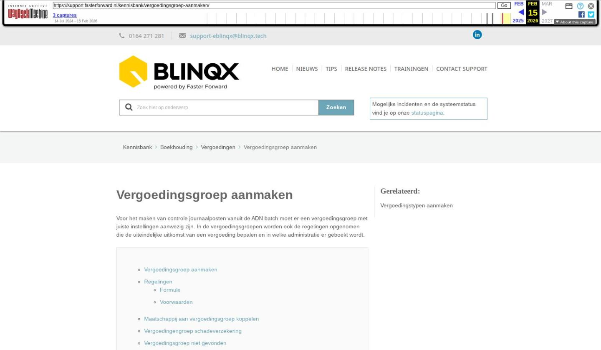

Vergoedingsgroep aanmaken

Tekstinhoud
Vergoedingsgroep aanmaken
Voor het maken van controle journaalposten vanuit de ADN batch moet er een vergoedingsgroep met juiste instellingen aanwezig zijn. In de vergoedingsgroepen worden ook de regelingen opgenomen die de uiteindelijke uitkomst van een vergoeding bepalen en in welke administratie er geboekt wordt.
Vergoedingsgroep aanmaken
Regelingen
Formule
Voorwaarden
Maatschappij aan vergoedingsgroep koppelen
Vergoedingengroep schadeverzekering
Vergoedingsgroep niet gevonden
Vergoedingsgroep aanmaken
De vergoedingsgroep maak je aan via Producten – Productbeheer – Vergoedingengroep. Deze zijn afhankelijk van de administratie en moeten dus per administratie aangemaakt worden.
Artikeltype kies het type (dienst, contract, enz.)
Naam die herkenbaar is voor de vergoedingsgroep.
Type wordt meestal 'normaal' of 'handmatig' gekozen. Bij normaal wordt de vergoeding automatisch aangemaakt, bij handmatig kan de vergoeding handmatig onder een product opgevoerd worden. Bij vergoedingsgroepen die gelden voor het verwerken van ADN berichten dan kies je hier ADN.
Interval is afhankelijk of het eenmalige facturatie betreft of bijvoorbeeld maandelijks bij een abonnement. Bij ADN vergoedingsgroepen kies je hier voor 'Eenmalig'.
Boeken in de administratie bepaald in welke administratie er geboekt moet worden, Kantoor of Centrale organisatie.
Betalingsprofiel hoe wordt de factuur verwerkt?
Particulier/zakelijk kan je instellen in vergoedingsgroepen met artikeltype schadeverzekering. Je kan een aparte vergoedingsgroep maken voor de particuliere producten en een aparte vergoedingsgroep voor de zakelijke producten als je de omzet wilt boeken op aparte grootboekrekeningen voor particulier en zakelijk.
Startdatum: De startdatum van de vergoedingengroep is een belangrijke datum. Wanneer de aanvraagdatum van een offerte voor de ingangsdatum ligt van de vergoedingengroep, dan zal de vergoeding niet automatisch worden uitgerekend! De startdatum moet dus altijd vóór de startdatum van de offerte liggen voordat de vergoedingen automatisch berekend kunnen worden.
Cluster: De vergoedingen hangen samen met het cluster ('Inkoop via') wat geselecteerd wordt in de offerte. Vaak heb je vergoedingsgroepen voor het cluster 'Rechtstreeks' en bijvoorbeeld 'DAK'. Zo kan je bijvoorbeeld twee vergoedingsgroepen Schadeverzekering particulier hebben. In de ene vergoedingsgroep staat dan het cluster op 'Rechtstreeks' en in de andere op 'DAK'. Wanneer een andere clusterorganisatie wordt ingesteld in de offerte dan is ingegeven in de vergoedingengroep, zullen de vergoedingen niet automatisch worden berekend.
Klikken op opslaan.
Regelingen
Onder het tabblad Regelingen kan je instellen hoe de verdeling wilt instellen. Per regel kan gekozen worden van welk vergoedingstype de vergoeding is. Dit stel je in onder type. Aan elke regel zit een formule vast.
Formule
Deze formules kunnen bestaan uit een aantal elementen en moeten altijd beginnen met een '='. Na opslaan van de formules, zal de uitkomst van de desbetreffende formule worden getoond. De waarden die hiervoor worden gebruikt zijn aan de linkerkant in het grijze vlak zichtbaar.
De meest gebruikte formule voor ADN is '=adn'
Heel soms worden vergoedingsgroepen ook gebruikt voor facturatie. De meest gebruikte formule voor facturatie is '=verkoopprijs'
In de formule kan het ook zo ingesteld worden dat een deel van de provisie gaat naar de deelnemer en een deel naar de centrale organisatie:
'Boek restant op' is waar de omzet/provisie op geboekt wordt.
Voorwaarden
Ook kan je voorwaarden op de formule instellen. Met deze voorwaarden kan je ervoor zorgen dat bepaalde zaken buiten de formule vallen, bijvoorbeeld deelnemers/kantoren.
Let op!: Om de vergoedingsregelingen in te stellen voor verdere doorboekingen is uitgebreide kennis nodig van de mogelijkheden van het vergoedingensysteem. Blinqx kan je op weg helpen met een cursus, of één van onze consultants kan je helpen met invoer hiervan. Neem hiervoor contact op met support.
Maatschappij aan vergoedingsgroep koppelen
Nu moet alleen de maatschappijen nog aan de vergoedingsgroep gekoppeld worden. Hiervoor ga je naar het tabblad Organisaties. Je selecteert hier links de maatschappijen. Met het pijltje zet je de maatschappijen naar rechts om te koppelen. Betreft een vergoedingsgroepen voor het artikeltype Schadeverzekering dan kan je de AFD branches koppelen. Het is dan niet noodzakelijk om de organisaties te koppelen.
Vergoedingengroep schadeverzekering
In bovenstaande punten lees je dat de betreffende maatschappij niet is opgenomen in de vergoedingengroep. Wat betreft de vergoedingengroep schadeverzekering is het ook mogelijk om AFD Branches te koppelen. Indien er dan een nieuwe maatschappij bij komt hoef je deze niet toe te voegen bij organisaties, omdat de match wordt gemaakt op de AFD branches.
Het koppelen van de AFD branches doe je onder tabblad AFD Branches. Rechts staan de beschikbare branches. Hier selecteer je de branches die horen bij een schadeverzekering. Via de pijl in het midden verplaats je deze branches naar Gekoppelde AFD branches. Vervolgens opslaan door middel van het vinkje.
Vergoedingsgroep niet gevonden
Indien een vergoedingsgroep niet correct is ingericht kan er geen controle journaalpost gemaakt worden. Hier lees je meer over de oorzaak en hoe je dit kunt controleren en oplossen.
Laatste update: 15 oktober 2025
Was deze informatie nuttig?
Ja Nee